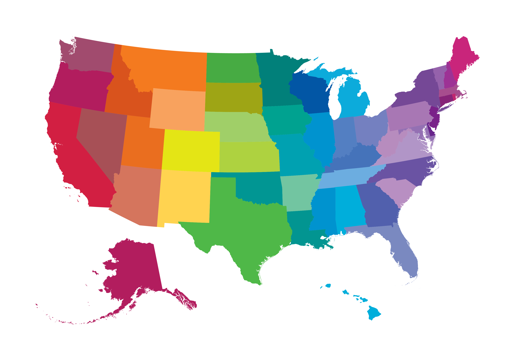
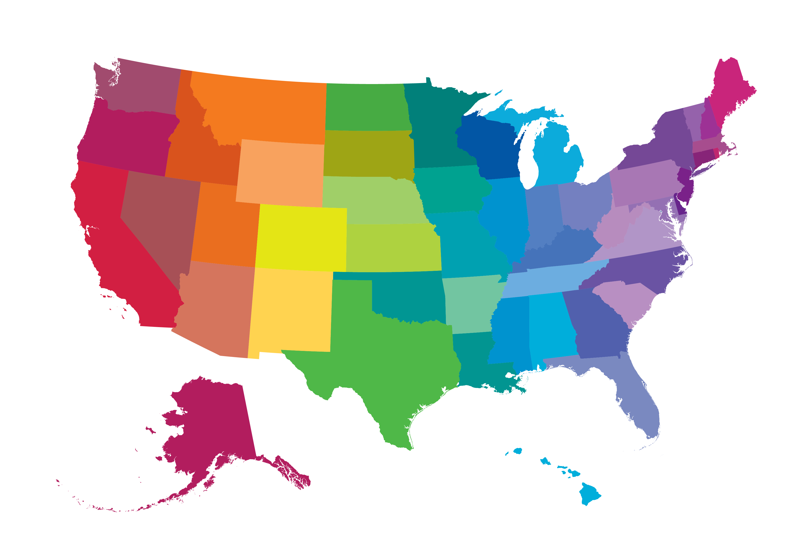

Estados Unidos (en inglés, United States, cuya abreviatura en inglés es US y en español es EE. UU.), oficialmente los Estados Unidos de América (en inglés, The United States of America, cuya sigla oficial en inglés es USA y su contraparte en español es EUA), es un país soberano constituido en una república federal constitucional compuesta por cincuenta estados y un distrito federal. La mayor parte del país se ubica en el medio de América del Norte —donde se encuentran sus 48 estados contiguos y Washington D. C., el distrito federal—, entre los océanos Pacífico y Atlántico, limita con Canadá al norte y con México al sur. El estado de Alaska está en el noroeste del continente, limita con Canadá al este, separado de Rusia al oeste por el estrecho de Bering. El estado de Hawái es un archipiélago polinesio en medio del océano Pacífico, y es el único de sus estados que no se encuentra en América. El país posee en el mar Caribe y en el Pacífico varios territorios no incorporados. Con 9,83 millones de km², y con más de 334 millones de habitantes, el país es el tercero mayor en área total, el quinto mayor en área contigua y el tercero en población. Es una de las naciones con más diversidad de etnias y culturas, producto de la inmigración a gran escala.